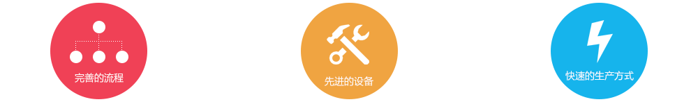

先健科技（深圳）有限公司成立于1999年，随后在香港、印度、荷兰、法国、俄罗斯、美国、北京、上海、广州、深圳成立了多个子公司和销售办事处。先健科技公司(1302.HK)是业内领先的心血管微创介入医疗器械供应商，集研发、制造和销售于一体，其高品质的、具自主知识产权的创新型产品畅销全球多个国家，分销商网络广泛覆盖欧洲、南美洲、亚洲、非洲等地，目前为全球第二大、金砖四国最大的先心病封堵器供应商。2011年11月，先健科技公司于香港联合交易所成功上市。2012年10月，先健科技公司与全球顶尖医疗器械公司美国美敦力公司建立战略合作关系，美敦力成为先健科技公司的战略股东。双方于2014年扩大战略合作，共同致力于在中国推出世界一流品质的先健科技自有品牌植入式心脏起搏器产品。
秉承着对质量和创新的不懈追求，先健科技公司率先通过欧盟DEKRA公告机构的ISO13485：2003质量体系认证，通过中国医疗器械生产质量管理规范检查，符合[2014]64《医疗器械生产质量管理规范》要求。公司于2008年被评为“国家级高新技术企业”，拥有“博士后科研工作站”，“国家地方联合工程试验室”等高水平科研资质，承担国家“十五”科技攻关课题、国家“973”计划和国家“863”计划等政府科研项目共计50余项。截止2016年6月30日，公司共有5个产品获CFDA批准为创新医疗器械，成为目前中国获CFDA批准创新医疗器械最多的医疗器械企业。
未来，先健科技公司将继续以创新为灵魂，合作为基石，担当为态度，执行为准则，认可为目标，为全球医生和患者提供优秀的创新型心血管微创介入医疗器械产品，并将以不断丰富的产品组合，不断提升的质量水平，不断完善的医患服务，推动全球医疗事业的卓越发展。
成为心血管领域全球领先企业
为全球医生和患者提供安全创新的心血管医疗器械。
创新
以创新为灵魂，不断探寻新思路与新方法，追求更新的技术和更好的质量管理体系，对产品、工艺、技术、管理模式进行持续改进与突破。
合作
以合作为基石，以团队利益及目标优先，通过公司各部门高效沟通与通力合作，以及与医学专家、经销商、供应商之间的互动，生产品质精良的医疗器械产品。
担当
以担当为态度，每一位先健人积极发挥主人翁意识，以公司发展为己任，以患者生命质量为最高目标，不断提高工作效能，促进行业技术与产业进步。
执行
以执行为准则，强化执行意识，端正执行态度，形成企业的系统执行力，最终形成目标明确、注重实现、简洁高效、监督有力的执行文化。
认可
以认可为目标，以尊重为基础，促进企业、员工和医生的共同发展，实现企业与员工的相互认可，赢得外部客户及公众对先健的信赖。
执行董事
执行董事
非执行董事
非执行董事
非执行董事
非执行董事
独立非执行董事
独立非执行董事
独立非执行董事
行政总裁
首席技术官
首席财务官及公司秘书
首席运营官
首席医学官
国家创新医疗器械LAmbre™左心耳封堵器临床研究试验在国内完成入组
先健科技获纳入恒生指数系列成分股
“高端介入医疗器械研发和产业化基地”项目获得发改委批复
“室间隔缺损介入治疗新器械新技术及其临床应用”技术获得2014年度国家技术发明二等奖
左心耳封堵器、可吸收药物洗脱冠脉支架系统批准为创新医疗器械，先健科技成为唯一一家拥有两项创新通道产品的公司
美敦力向先健科技开放欧洲营销网络，CeraFlex成为首个进入西方医疗器械主流市场的中国品牌
普惠研制的人工生物心脏瓣膜在中国成功上市
先健科技获批——介入医疗生物技术及系统国家地方联合工程实验室和广东省工程研发中心
先健科技成功由港交所创业板转主板上市
LawMax™ Dilator获得FDA批准
美敦力公司完成对先健科技公司的战略投资
Spider™ PFO、HeartR™ 封堵器、Cera® & CeraFlex™ PFO与LawMax™ Dilator荣获CE认证
先健科技Cera®陶瓷膜（纳米结构氮化钛）封堵器系列取得中国注册证
国务院发展研究中心领导莅临先健科技考察调研
CCTV黄金节目《焦点访谈》走进先健：创新—两条腿走路
Fustar™可调弯鞘获得FDA批准
"全降解血管支架材料关键技术及产品研发" 项目获得国家高技术研究发展计划（863计划）资助
CeraFlex™系列封堵器及血管塞获得CE认证
欧洲子公司成立
先健在香港交易所成功上市
SeQure™管腔抓捕系统获得FDA批准（第一个获得FDA批准的产品）
Fustar™可调弯鞘、Cera™血管塞、Acumark™测量球囊导管、SeQure ™抓捕器及Cera™筛孔ASD封堵器获得CE认证
先健在德国和法国进行Spider™ PFO的临床试验（首次在欧洲进行临床试验）
先健经中国人力资源和社会保障部以及博士后管委会批准为"博士后科研工作站"并开始招收首批博士后研究人员
先健董事长向胡锦涛主席汇报先健产品研发和企业发展情况
PBPV球囊、镍钛合金腔静脉滤器(VCF)及Cera™ ASD、VSD、PDA封堵器获得CE认证
"具有纳米修饰的心血管植入器件材料" 项目和 "可控式人造主动脉弓覆膜支架的研究与应用"项目分别获得国家重点基础研究发展计划（973计划）及国家高技术研究发展计划（863计划）资助
"生物可吸收复合材料大血管支架的研究"项目被纳入广东省产学研合作项目
Aegisy™腔静脉滤器获得CE认证（第一个获得CE认证的产品）
先健印度子公司成立
先健被评为"国家级高新技术企业"
先健收购北京市普惠生物医学工程有限公司及深圳市擎源医疗器械有限公司
先健获得欧洲ISO 13485: 2003和MDD认证
"表面改性的金属生物可吸收血管支架"项目获得广东省医疗器械重大研究专项资助
兰馨亚洲风险投资进入先健，公司更名为先健科技（深圳）有限公司
先健被评为"深圳市高新技术企业"
先健获得ISO9001及ISO13485(YY/T0287)认证
HeartR™ 封堵器和Supporter™ 冠脉支架获得中国注册证
深圳市先健科技发展有限公司成立
先健科技拥有庞大的销售网络，由全球180多个经销商组成。其中，130多个中国国内经销商，覆盖全中国主要省份和自治区；50多个国际经销商，覆盖了欧洲、北美洲、南美洲、亚洲及非洲的主要人口大国。
先健科技，将进一步专注于建设在高新技术医疗器械市场中的领导地位，计划进一步渗透人口众多的成熟市场。
50多个国外经销商
130多个国内经销商
先健科技的营销团队由医学专业成员组成，团队组织进行内部销售培训及经销商管理，制定最佳行业准则，寻找市场机会、反馈销售表现以及维护客户关系，同时亦与医生及医院直接互动，确保先健科技的品牌及产品广为医疗器械行业认可。
先健科技的品牌价值是建立在专业教育、循证医学和知识共享的基础上。目前，先健科技已成立了学术交流平台（LKEP——Lifetech Knowledge Exchange Program），该跨国平台旨在促进各国临床专家学术交流。先健科技已在全球设立了多家临床交流中心，自2011年该项目启动至今，已成功组织了多次交流活动，吸引了来自欧洲、南美洲、亚洲的临床专家进行现场手术技术分享，实现了跨国学术交流的实践平台。截止2014年底，LKEP一共在10个国家22个城市成功举行了超过40场交流活动，参与医生人数多达200多人。举办了首届亚洲VSD workshop 和 首届亚洲外周血管workshop融合同台手术、讲课发言、圆桌讨论等多元化形式的国际合作交流平台。
同时，先健科技致力于通过专业培训及患者教育计划来推广产品，分别在巴西、意大利、印度、希腊以及中国的北京、上海、广州、哈尔滨、天津、广西等地，建立了多个先天性心脏病介入治疗国际培训中心，提高医生手术技能的同时，还培养了病人对疾病的认知。

质量方针：“我们承诺符合法规要求，提高质量管理体系的有效性，为全球医生和患者提供安全创新的心血管医疗器械。”
公司制造系统秉承，高标准质量意识，高度服从，高效执行的理念，汇集了一批从一线操作工到各级专业技术及管理团队的高素质严要求的员工。
大家深切懂得公司从事的是高尚而又高风险的植入性医疗行业，质量保证对公司声誉影响和患者健康安全的重要性。持续开展的QCC及金点子培养了全员参与改善的质量及成本控制意识。
逐步完善的跨产品多技能培训机制及储备梯队管理人员制度，是公司持续发展的强大动力和保障。
公司完善的流程及系统化管理模式，先进的设备设施，灵活而快速的生产方式是获得客户满意度和订单个性化需求的坚强基石。